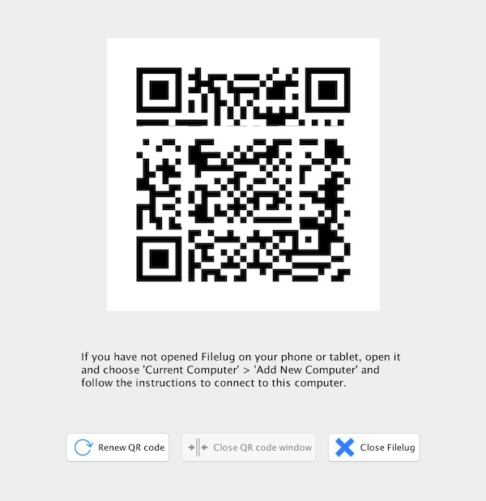
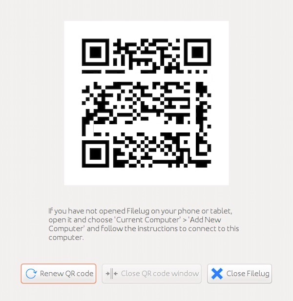

Double-click setup.exe after you download and extract the file. The program will lead you through the complete installation process step by step.
Download 32-bit Setup File
Your computer is running the 32-bit version of Windows. Please download this file to install on your computer.
Download 64-bit Setup File
Your computer is running a 64-bit version of Windows. Please download this file to install on your computer.
If the "setup.exe" is not able to run on your computer, please click
HERE
。
Download and extract the file and then run apprun.sh to start the application.
Download 32-bit Compressed File
Your computer is running the 32-bit version of Windows. Please download this compressed file, and extract it on your computer.
Download 64-bit Compressed File
Your computer is running a 64-bit version of Windows. Please download this compressed file, and extract it on your computer.

Mac OS X
Version: 2.0.2, Release Date: 2017/5/18
Mountain Lion (10.8)
Mavericks (10.9)
Yosemite (10.10)
El Capitan (10.11)
Sierra (10.12)
After you download the file, open it and drag the icon to the folder "Applications".
Download
Your computer is running Mac. Please download this file to install on your computer.

Linux
Version: 2.0.2, Release Date: 2017/5/18
Ubuntu 10.04 or above
Fedora 21 or above
CentOS 5 or above
Debian 6 or above
Arch Linux 2016 or above
Elementary OS Luna (0.2) or above
openSUSE Leap 42.1 or above
Oracle Linux 5.5 or above
Red Hat Enterprise Linux 5.5 or above
SUSE Linux Enterprise Server 10 SP2 or above
Download and extract the file and then run apprun.sh to start the application.
We currently don't support Filelug on 32-bit version of Linux. Let us know if you need it.
Download 64-bit Compressed File
Your computer is running the 64-bit version of Linux. Please download this file, and extract it on your computer.